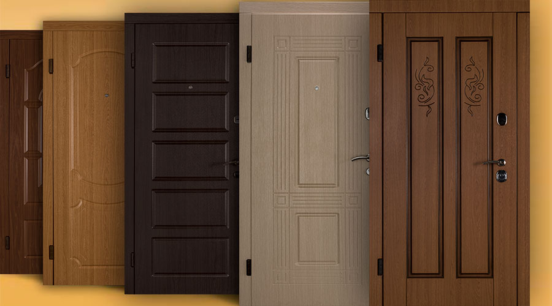

Кожен тип дверей має свої плюси та мінуси, свої сильні та слабкі сторони. Насамперед, потрібно звернути увагу на те, яке завдання для Вас виконуватиме та чи інша вхідна група. Металеві двері традиційно виконують їхню головну функцію - безпеку. Давайте розглянемо переваги та недоліки даного типу конструкцій.

Тепло- та звукоізоляція. Хороші металеві двері мають високу якість складання, ущільнювачів та матеріал конструкції, що сприяє збереженню тепла та затишку будинку.
Безпека. Металеві двері середнього та дорогого сегмента поставляються з посиленою системою замків, яка максимально захищає від злому. При повороті ключа механізм закриває двері з усіх боків дверей (збоку, вгорі, знизу).
Довговічність. Такі двері прослужать Вам дуже довго, а при належному догляді (змащуванні механізмів закривання/відчинення) та вівсі кілька десятків років.
Міцність. Металеві двері мають високу міцність і стійкість до злому, так як товщина сталевого не дозволяє розрізати двері, застосовуючи ручні або механізовані інструменти.
Дизайн. Крім класичних розмальовок та форм Ми пропонуємо різні дизайнерські рішення, які допоможуть підкреслити дизайн та інтер'єр Вашої оселі.
Недоліки
Згодом, на таких дверях можуть з'являтися подряпини, вм'ятини. Це з випадковим механічним впливом. Дані проблеми можуть зменшити термін експлуатації конструкції (у місцях деформації може з'явитися іржа), а також позбавити естетичного задоволення. Але, як і для будь-якої речі, це пов'язано з акуратністю користування, і якщо такі двері будуть стояти в не публічних місцях, швидше за все, Вам вдасться уникнути цієї проблеми.
Розглянувши переваги та недоліки металевих дверей, можна зробити висновок, що це надійний і безпечний тип вхідної групи, яка при належному догляді прослужить Вам десятки років. Маючи колосальний досвід і за плечима, Ми гарантуємо якісні та доступні металеві двері для Вашої оселі. Для цього зателефонуйте за номером +38(097)393-25-74.